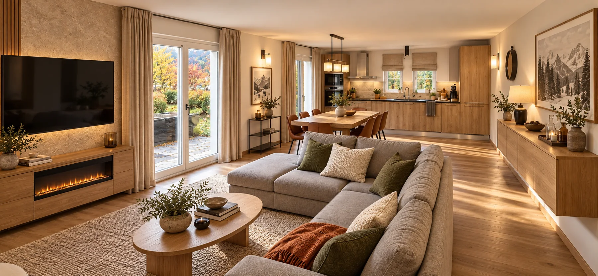

Your home in the French Alps
Mountain days.
Your people, closer.
A four-bedroom retreat in Samoëns.
For long lunches, fresh air and time together.
A sense of place
A little further away.
A little closer together.
First tracks. One more trail. Then home, boots off, something good on the table and an evening with nowhere else to be.
Papillon is your base in Samoëns: four bedrooms for ten, front and rear gardens, ski and bike storage, and the village within walking distance.
Make yourself at home ↗A new chapter, imagined. The interiors and gardens shown are renovation visualisations, not photographs of current facilities. The hot tub, bar and front patio are proposed designs. Check the Airbnb listing for current photographs and available amenities before booking.
The art of doing very little
Warm wood.
Soft edges.
Time on your side.
Honeyed oak, linen and woodland tones set the direction for our new interiors. Relaxed, tactile and made for being together.
02 — Behind the doors
Room for everyone.
Space for yourself.
Explore the new look for the bedrooms and living spaces. Select an image to take a closer look.
The quiet nights
Twin room · Design visualisation
The little adventurers
Room for four · Design visualisation
The end-of-day ritual
Stone & timber · Design visualisation
Four bedrooms · Two bathrooms · One whole apartment
03 — A little more outside
Let the evening
take its time.
Two gardens, two different moods. Our vision is simple: somewhere to linger, from the first coffee to the last glass.
Autumn, in good company.
Natural stone, golden foliage and generous seating. A hot tub and outdoor bar are part of the proposed scheme, subject to completion.
The front patio · Our proposal
Morning coffee.
Outside, together.
A sociable courtyard with timber seating, linen cushions, autumn planting and clear paths to the doors and stairs. A shared corner to meet, talk and take the day slowly.
Samoëns, all year round
The mountains.
At your pace.
A real Haute-Savoie village, for people who enjoy coming home as much as heading out.
First lift. Last run.
Head for the Grand Massif, then return to the village for an unhurried evening. Ski storage keeps your kit out of the living space.

How many people can stay?
Up to ten guests across four bedrooms, with two bathrooms. See the listing for the current sleeping arrangements.
Can we walk to the village and lifts?
Yes, Samoëns village and the lifts are within walking distance. The exact address and arrival directions are supplied with your booking.
Is there space for skis and bikes?
Ski and bike storage is available. Check any specific equipment requirements with the host before booking.
Do the images show the current facilities?
No. The interior and garden imagery shows the proposed renovation. The hot tub, bar and front patio are not confirmed amenities. Current photographs, facilities, rates and terms are on Airbnb.
How do we book?
Booking is through Airbnb, where you can check live availability, rates, included services and cancellation terms.
Your next chapter
Bring your people.
Find your mountain days.
Live dates, current photographs and pricing are on Airbnb.
Check availability on AirbnbEntire apartment · 4 bedrooms · Up to 10 guests05 — Les Vallons, Samoëns
Your corner
of the mountains.
At the junction of Route de Vallon d’en Bas and Route de Sixt, leaving Les Vallons towards Samoëns centre.
Directions to the junction ↗The pin marks the Vallons junction. Exact entrance details are provided with your arrival information.